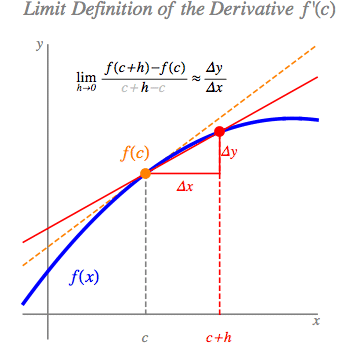

In my previous post on \(\epsilon\) (epsilon), I wrote about this statement:
$$ 1 + \epsilon = 1 $$
which seemed like it came from a planet that had fallen out of orbit or something. Well, try this one on for size:
$$ \epsilon^2 = 0 $$
Another math koan! \(\epsilon\) is still a stand-in for the same concept here—an infinitesimal value—but its function is a little different. This post will be about dual numbers and what you can do with them.
But first, let’s start with another devilishly complex (har har) number: \(i\).
Same same but different
You might remember imaginary and complex numbers from high school trigonometry. There is a number \(i\) such that
$$ i^2 = -1 $$
which really tempts you to find the value of just plain \(i\). Since it doesn’t really exist, we just have to treat it like an \(x\): \(2 + 3i\) (a complex number), etc.
But the kicker is that the point of \(i\) is not its value but what it lets us do. The point is that this property of \(i\) makes it possible for us to reason about rotation around a circle, because its sign changes as you keep multiplying it by itself.
I may or may not have learned that last point in high school, but if you’re anything like me, it is helpful to have a refresher that is more lucid and engaging than any high school math class: 3blue1brown / BetterExplained / Welch Labs
Cod\(i\)ng with \(i\)?
While we’re on the subject of complex numbers, let’s play with them a bit. I was a bit surprised to discover that built-in complex data types are not rare among modern programming languages. It’s not a surprise that Julia has them natively, but so do R, Python, and even Ruby. (Sadly, Clojure does not.)
Of course, there is some variation in coolness of implementation:
# You can use `im` to implicitly denote the imaginary part of a complex number
# Not much different than typing LaTeX. Pretty slick!
z = 3 + 4im
typeof(z) # Complex{Int64}
2z # 6 + 8im
1im ^ 2 # -1 + 0im. Don't need to declare 0 real part
(3 + 4im) + (2 + 3im) # 5 + 7im
1im - 1im # 0 + 0im
(2 + 1im) * (3 + 1im) # 5 + 5im
# Python follows the electrical engineering convention of using j for i
# because i means current in that field (pun intended)
z = complex(3, 4) # (3+4j)
type(z) # complex
2 * z # (6+8j)
complex(0, 1) ** 2 # (-1+0j)
complex(3, 4) + complex(2, 3) # (5+7j)
complex(0, 1) - complex(0, 1) # 0j. interesting output
complex(2, 1) * complex(3, 1) # (5+5j)
# Syntax is a bit cumbersome
z <- complex(real = 3, imaginary = 4) # 3 + 4i
typeof(z) # complex
complex(real = 0, imaginary = 1) ** 2 # -1 + 0i
complex(real = 3, imaginary = 4) + complex(real = 2, imaginary = 3) # 5 + 7i
# Sorry R, but I can't be bothered to type so much
Okay, that was fun. Now let’s return to \(\epsilon\).
Dual numbers
Dual numbers are pretty similar to complex numbers, except with \(\epsilon\) instead of \(i\). \(2 + 3\epsilon\) is a dual number, for example.
We could say that it still represents an infinitesimal here, a value so small that when you square it, it is effectively zero. Thus,
$$ \epsilon^2 = 0 $$
But as with \(i\), the significance of \(\epsilon\) is not in the exact value, but rather the mathematical play that it opens up for us. Watch what happens to this unsuspecting parabola:
$$ \begin{aligned}
f(x) &= x^2 \\
f(x + \epsilon) &= (x + \epsilon)^2 \\
&= x^2 + 2x\epsilon + \epsilon^2 \\
&= x^2 + 2x\epsilon + \cancel{0}
\end{aligned} $$
We can rewrite this further, since our original function has reappeared in the result:
$$ f(x + \epsilon) = f(x) + 2x\epsilon $$
And what is \(2x\) but the derivative of \(x^2\)? 🤔
$$ f(x + \epsilon) \overset{?}{=} f(x) + f'(x)\epsilon $$
Just to make sure this isn’t a one-off, let’s try it with a more complex polynomial, and scale the \(\epsilon\) component:
$$ \begin{aligned}
f(x) &= 2x^3 + 5x - 7 \\
f(x + \textcolor{magenta}{2} \epsilon) &= 2(x + \textcolor{magenta}{2} \epsilon)^3 + 5(x + \textcolor{magenta}{2} \epsilon) - 7 \\
&= 2(x^3 + 6x^2\epsilon + 12x\epsilon^2 + 8\epsilon^3) + 5(x + 2\epsilon) - 7 \\
&= \textcolor{teal}{2x^3} + \textcolor{orange}{12x^2\epsilon} + \textcolor{lightgray}{24x\epsilon^2} + \textcolor{orange}{16\epsilon^3} + \textcolor{teal}{5x} + \textcolor{orange}{10\epsilon} - \textcolor{teal}{7} \\
&= \textcolor{teal}{2x^3 + 5x - 7} + \textcolor{magenta}{2} \textcolor{orange}{(6x^2 + 5 } \textcolor{lightgray}{+ 8\epsilon^2}\textcolor{orange}{)\epsilon} \\
&= \textcolor{teal}{f(x)} + \textcolor{magenta}{2} \textcolor{orange}{f'(x) \epsilon}
\end{aligned} $$
Indeed, we still obtain the derivative of our original function, multiplied by the dual component of our input. 😮 This means
$$ f(a + b \epsilon) = f(a) + bf'(a)\epsilon $$
In other words, we found the output and a local derivative in one go—automagically!—without having to find the derivative by hand first (that would be symbolic differentiation, i.e., through manipulating symbols).
It should be possibly to exploit this property of \(\epsilon\) with functions whose derivatives are not so straightforward to find.
Well, technically, you could also approximate the derivative with finite differences:

But this is tedious at best and still not perfectly accurate when done by hand, and prone to all sorts of errors when done by computer (truncation errors, rounding errors, etc.).
DIY automatic differentiation
This brings us to automatic differentiation, which is a huge topic in machine learning. There are libraries to do this, but it is important to understand how they work by implementing automatic differentiation from scratch.
One stumbling block, however, is that outside of machine learning, dual numbers are a pretty obscure piece of mathematics. No language comes with them built-in; you have to implement a class yourself.
The squarest root in Babylon
Before we build the class, let’s set a goalpost.
Alan Edelman’s demonstration of automatic differentiation in Julia is pretty nifty, though I think it moves pretty fast for a newcomer to automatic differentiation. So let’s break down what he is trying to do.
He wants to find the derivative of \(\sqrt x\). With the same power rule we used for the polynomials above, that’s pretty trivial to do symbolically, right?
$$ \begin{aligned}
f(x) = \sqrt x &= x^{\frac{1}{2}} \\
\frac{df}{dx} = \frac{1}{2} x^{-\frac{1}{2}} &= \frac{1}{2\sqrt x}
\end{aligned} $$
Done. Blog post over!
🤦🏻
Okay, but let’s say we didn’t know that \(\sqrt x = x^{\frac{1}{2}}\). Now whatcha gonna do?
Apparently the Babylonians knew a way to approximate the square root.
$$ \begin{gathered}
t := \frac{t + \frac{x}{t}}{2} \\
\textrm{Repeat until }t \textrm{ converges to } \sqrt x
\end{gathered} $$
The tutorial is of course intended to show off how well-suited Julia is to the overall task, but I’d say this preliminary work is a fun task for Clojure. Let n denote the number of iterations.
(defn bab-sqrt [x n]
(loop [t 1.0 acc 0]
(if (>= acc n)
t
(recur (-> (/ x t)
(+ t)
(/ 2))
(inc acc)))))
(bab-sqrt 2 5) ; 1.414213562373095
(Math/sqrt 2) ; 1.4142135623730951
# the original code from Alan Edelman's notebook
function Babylonian(x; N = 10)
t = (1+x)/2
for i = 2:N; t=(t + x/t)/2 end
t
end
Babylonian(2) # 1.414213562373095
√2 # 1.4142135623730951
def bab_root(x, iters=10):
t = 1
for _ in range(iters):
t = (t + x / t) / 2
return t
bab_root(2, 30)
That converged pretty quick! Not to mention, it’s more than an “approximation”—it’s practically indistinguishable to the true value after just five iterations.
Okay, so we have our function. Since we already know the derivative of \(f(x)\) through symbolic differentiation, we can compute a true value for \(f'(x)\) at any point \(x = a\), against which we can validate the result of automatically differentiating \(f(x)\) at \(x = a\).
The first step to differentiate the Babylonian square root function at \(x = 2\) symbolically using dual numbers would look like this:
$$ \frac{t + \frac{2 + \epsilon}{t}}{2} $$
which should yield a satisfactorily precise result after 5 iterations.
We thus need to implement our class similarly to the imaginary number classes, so that something like bab_root(Dual(5, 1)) will give us the derivative of \(f(x) = \sqrt x\) at \(x = 5\) without having to explicitly write anything about \(\frac{1}{2\sqrt 5}\).
Getting classy
The basic task here is to create a class that overloads the basic arithmetic operators so that dual numbers can be manipulated like normal numbers. In other words, extend the operators to follow the rules of dual number arithmetic (included below).
To be honest, defining classes is above my current level of Clojure skills, I’ve never overloaded operators in Python before, and I’m almost completely new to Julia. So I will adapt the Python code from this post and the Julia code from this notebook, break it down and proceed from there.
The rules of dual number arithmetic are as follows. Addition and multiplication work just like with complex numbers or polynomials (FOIL):
$$ \begin{aligned}
(a + b\epsilon) \pm (c + d\epsilon) &= \textcolor{teal}{(a + c)} \pm \textcolor{orange}{(b + d)}\epsilon \\
(a + b\epsilon) (c + d\epsilon) &= \textcolor{teal}{(ac)} + \textcolor{orange}{(bc + ad)}\epsilon
\end{aligned} $$
Division is not so obvious, but this is the rule (from Wikipedia):
$$ \frac{a + b\epsilon}{c + d\epsilon} = \textcolor{teal}{\frac{a}{c}} + \textcolor{orange}{\frac{bc - ad}{c^2}} \epsilon $$
Our result should have the teal part as its real component and the orange part as its dual component. We can treat \(\epsilon\) as merely a symbol to be printed when the value needs to be displayed for us humans to read.
The Python code looks really long, but don’t get intimidated; it’s mostly boilerplate.
class Dual:
def __init__(self, real, dual=0):
self.real = float(real)
self.dual = float(dual)
# Overload basic operators
# Copying these to the "r" functions ensures that a mixed expression can be
# computed regardless of the order of arguments (Real+Dual / Dual+Real)
def __add__(self, other):
if isinstance(other, Dual):
return Dual(self.real + other.real,
self.dual + other.dual)
else:
return Dual(self.real + other, self.dual)
__radd__ = __add__
def __sub__(self, other):
if isinstance(other, Dual):
return Dual(self.real - other.real,
self.dual - other.dual)
else:
return Dual(self.real - other, self.dual)
def __rsub__(self, other):
return Dual(other, 0) - self
def __mul__(self, other):
if isinstance(other, Dual):
return Dual(self.real * other.real,
self.real * other.dual + self.dual * other.real)
else:
return Dual(self.real * other, self.dual * other)
__rmul__ = __mul__
def __truediv__(self, other):
if isinstance(other, Dual):
return Dual(self.real/other.real,
(self.dual*other.real - self.real*other.dual)/(other.real**2))
else:
return (1/other) * self
def __rtruediv__(self, other):
return Dual(other, 0).__truediv__(self)
def __pow__(self, other):
return Dual(self.real**other,
self.dual * other * self.real**(other - 1))
# For human-readable representation
def __repr__(self):
return repr(self.real) + ' + ' + repr(self.dual) + 'ϵ'
# taken from Alan's notebook
import Base: +, -, *, /, convert, promote_rule
struct D <: Number # D is a function-derivative pair
f::Tuple{Float64,Float64}
end
# Overload basic operators
+(x::D, y::D) = D(x.f .+ y.f)
-(x::D, y::D) = D(x.f .- y.f)
*(x::D, y::D) = D((x.f[1]*y.f[1], (x.f[2]*y.f[1] + x.f[1]*y.f[2])))
/(x::D, y::D) = D((x.f[1]/y.f[1], (y.f[1]*x.f[2] - x.f[1]*y.f[2])/y.f[1]^2))
# Convert(D, 3)
convert(::Type{D}, x::Real) = D((x,zero(x)))
# Operations with a dual number and a real number return a dual value
promote_rule(::Type{D}, ::Type{<:Number}) = D
# For human-readable representation
Base.show(io::IO,x::D) = print(io,x.f[1]," + ",x.f[2],"ϵ")
I think it’s noteworthy how short the Julia code is, even beyond Alan’s use of single-letter variables, for accomplishing the same thing (with the exception of accepting D((x)) and returning D((x, 0)), which I’m sure is also possible). It’s almost like halfway between Python and Clojure! (And it almost makes Python look like Java 😆)
Let’s play around a bit.
# Complete input
Dual(3, 5) # 3.0 + 5.0ϵ
# Real-only input
Dual(3) # 3.0 + 0.0ϵ
# Confirming the characteristic property of ϵ
Dual(0, 1) ** 2 # 0.0 + 0.0ϵ
# Random arithmetic
Dual(3, 10) * Dual(4, 8) # 12.0 + 64.0ϵ
Dual(7, 2) - 2 # 5.0 + 2.0ϵ
7 / Dual(5, 30) # 1.4 + -8.4ϵ
# Complete input
D((3,5)) # 3.0 + 5.0ϵ
# Convert real numbers to dual numbers
convert(D, 3)
# Confirming the characteristic property of ϵ
# Note that Julia doesn't require ^ to be explicitly defined!
D((0,1)) ^ 2 # 0.0 + 0.0ϵ
# Random arithmetic
D((3,10)) * D((4, 8)) # 12.0 + 64.0ϵ
D((7,2)) - 2 # 5.0 + 2.0ϵ
7 / D((5,30)) # 1.4 + -8.4ϵ
Ready for liftoff
This makes it quite simple to do more sophisticated things with dual numbers, because our classes work with just the salient parts: the real and dual components. The \(+\) and \(\epsilon\) are just there for decoration.
What that means is when we input a Dual(my_real, 1) into my_func(x), we get another Dual(dual, real) back. The real component of this Dual result is the value of my_func(my_real). The dual component of the result (which is just a float, not another Dual) is the derivative of my_func(x) at my_real.
The code is simpler than the explanation:
def auto_diff(f, x):
return f(Dual(x, 1.)).dual
function AutoDiff(func, x)
func(D((x,1))).f[2]
end
Let’s start with a softball. How about \(f'(2)\) if \(f(x) = x^2\)?
auto_diff(lambda x: x ** 2, 2) # 4.0
AutoDiff(x -> x^2, 2)
Not bad! How about \(f'(10)\) if \(f(x) = x^{\sqrt e} + x^{\sqrt \pi}\)?
import math
auto_diff(lambda x: x ** (math.sqrt(math.e)) + x ** (math.sqrt(math.pi)), 10)
# 17.839035180965308
And how about \(f'(\pi)\) if \(f(x)\) is the Babylonian square root (\(\frac{t + \frac{x}{t}}{2}\))? The wild thing is that we can actually compute the derivative with more and more precision by increasing the number of iterations of the original function.
(Hmm, that sounds vaguely akin to gradient descent… 🤔)
Let’s modify auto_diff to allow this, and then iteratively show more and more precise values for \(f(\pi)\) and \(f'(\pi)\).
def auto_diff(f, x, **kwargs):
return f(Dual(x, 1.), **kwargs).dual
for i in range(1, 6):
func = bab_root(math.pi, iters=i)
deriv = auto_diff(bab_root, math.pi, iters=i)
print(f"{func}, {deriv}")
function AutoDiff(func, x; kwargs...)
func(D((x,1)); kwargs...).f[2]
end
for i = 1:5
func = Babylonian(π, N = i)
deriv = AutoDiff(Babylonian, π, N = i)
println("$(func), $(deriv)")
end
What is impressive is that not only does this work, it’s also more manageable, computationally faster, and more accurate to take derivatives this way. I won’t bore you with the evidence (you can check other blogs for that) because I’m mostly interested in the math behind this.
Plus, I can already believe that this is a better way. The only thing is that it’s a black box; you can’t see the general derivative \(f'(x)\).
Or can you?
Automatic symbolic differentiation?
Thanks to Alan’s notebook, I discovered SymPy, which can generate properly typeset \(\LaTeX\) directly from your code and manipulate variables like \(x\) as symbols rather than values!
I tried to hack SymPy’s ImaginaryUnit class to implement a symbolic version of dual numbers, but I was too unfamiliar with it to get any results (everything was coming back zero). So to demonstrate this, I’m going to jump ahead a bit and use Julia’s built-in diff function.
# Pkg.add("SymPy") # if you don't already have it
using SymPy
x = symbols("x")
for k = 1:5
display(simplify(Babylonian(x,N=k)))
end
for k = 1:5
display(simplify(diff(simplify(Babylonian(x,N=k)),x)))
end
Watch what happens as we do successive iterations of the function Babylonian:
$$ \begin{gathered}
\frac{x}{2} + \frac{1}{2} \\[0.8em]
\frac{x + \frac{\left(x + 1\right)^{2}}{4}}{x + 1} \\[1em]
\frac{x^{4} + 28 x^{3} + 70 x^{2} + 28 x + 1}{8 \left(x^{3} + 7 x^{2} + 7 x + 1\right)} \\[1em]
\frac{x^{8} + 120 x^{7} + 1820 x^{6} + 8008 x^{5} + 12870 x^{4} + 8008 x^{3} + 1820 x^{2} + 120 x + 1}{16 \left(x^{7} + 35 x^{6} + 273 x^{5} + 715 x^{4} + 715 x^{3} + 273 x^{2} + 35 x + 1\right)}
\end{gathered} $$
Watch what happens as we do successive iterations of its derivative:
$$ \begin{gathered}
\frac{1}{2} \\[0.8em]
\frac{x^{2} + 2 x + 5}{4 \left(x^{2} + 2 x + 1\right)} \\[1em]
\frac{x^{6} + 14 x^{5} + 147 x^{4} + 340 x^{3} + 375 x^{2} + 126 x + 21}{8 \left(x^{6} + 14 x^{5} + 63 x^{4} + 100 x^{3} + 63 x^{2} + 14 x + 1\right)}
\end{gathered} $$
Once you go beyond the third iteration, the polynomial expression of the derivative of the Babylonian square root function explodes to a length that is way beyond any computer monitor (and I can’t get the \(\KaTeX\) renderer to do line-wrapping), so you’ll have to be convinced by this.
It should be noted that this is not what the computer is doing in order to diff our function, but it is what we would have to do by hand if
- We wanted an exact answer, but
- Our \(f(x)\) couldn’t be differentiated with simple rules like the power rule, and
- Dual numbers didn’t exist.
Imagine!
Automatic differentiation
It’s showtime.
Out-of-the-box solutions
Earlier, I hinted at the relevance of automatic differentiation to gradient descent. Indeed, it is hugely relevant to gradient descent, and thus to machine learning more generally. It should come as no surprise, then, that major machine learning libraries like PyTorch and Google-backed TensorFlow leverage it heavily.
You can go really deep with this stuff, but for the purposes of this blog post (and where I’m at in my studies of all this), it’s enough just to get automatic differentiation working out of the box in Python (with Autograd) and Julia (with ForwardDiff).
import autograd.numpy as np
from autograd import grad
# Our DIY version
auto_diff(bab_root, 2) # 0.35355339059327373
# Autograd version
dbab_root = grad(bab_root)
dbab_root(2.) # 0.35355339059327373
# Pkg.add("ForwardDiff") # if you don't have it
using ForwardDiff
# Our DIY version
AutoDiff(Babylonian, 2, N = 5) # 0.3535533905932738
# ForwardDiff version
ForwardDiff.derivative(x -> Babylonian(x; N=5), 2) # 0.35355339059327373
Cool! It works out of the box—no fiddling with making dual number classes. That’s been done for us (and done more comprehensively and faster too).
Now, we got grad to auto-differentiate bab_root for us, a function \(f(x)\) that accepts a scalar and returns a scalar, \(f'(x)\).
\(\epsilon\) in the cost function
Can grad auto-gradiate(?) the cost function \(J(\theta)\) of our linear regression model from before, finding multiple partial derivatives in one swoop?
Let’s first take a step back and think about what we’re actually doing here.
Our cost function \(J(\theta)\) takes a vector of weights \(\theta\). The cost function returns a vector where each value indicates how “off” the model is due to each weight.
$$ \begin{aligned}
J(θ) &= \frac{1}{2m}\sum_{i=1}^m{\Big[h_θ(x^i) - y_i\Big]}^2 \\
&= \frac{1}{2m} \Big[\vec o^T (h_θ{\textbf X} - \vec y)\Big]^2
\end{aligned} $$
In this case, there are 6 weights (5 features + the bias), so \(J(\theta)\) has 6 components.
The partial derivatives of \(J(\theta)\) takes the same vector of weights and return the gradient \(\nabla J\), which is a vector where each value indicates the “velocity” of each misestimation due to the corresponding weight. (Returning to the coffee mug analogy, the gradient tells us the slope in each dimension \(x, y, z\) at our current point on the coffee mug.)
$$ \frac{\partial J(θ)}{\partial θ_j} = \frac{1}{m}\sum_{i=1}^m\Big[h_θ(x^i) - y_i\Big]x_j^i $$
These “velocities” tell us how to change our weights so that we can get a little closer to the minimum of the function (convergence, or the bottom of the mug).
When we did this before, we still had to find the partial derivatives manually, even though we did use matrix operations to streamline it all a bit:
$$
\nabla J = \begin{bmatrix}
\frac{1}{m} \sum_{i=1}^m x_0^i{(e_1)}^2 \\[0.5em]
\frac{1}{m} \sum_{i=1}^m x_1^i{(e_1)}^2 \\[0.5em]
\vdots \\[0.5em]
\frac{1}{m} \sum_{i=1}^m x_n^i{(e_1)}^2
\end{bmatrix} $$
What we are asking now is: Can we get the velocities straight from the cost function without explicitly doing any math to find partial derivatives?
That is, can we write code to do \(J(\theta + \epsilon)\)?
$$
\theta = \begin{bmatrix}
\theta_0 \\ \theta_1 \\ \vdots \\ \theta_n
\end{bmatrix} \qquad
\theta + \epsilon = \begin{bmatrix}
\theta_0 + \epsilon \\ \theta_1 + \epsilon \\ \vdots \\ \theta_n + \epsilon
\end{bmatrix}
$$
Spoiler alert: The answer is yes!
Making the loopless loop mathless, too?
Let’s get our setup going again.
import sklearn.datasets
X, y = sklearn.datasets.make_regression(n_samples=500, n_features=5)
X = np.hstack((np.ones((X.shape[0], 1)), X)) # padding for bias column
y = np.vstack(y) # this just fixes a quirk of sklearn's output
After much trial and error, it seems to me that grad can only take one argument. Mathematically, this makes sense.
This will require re-working the code a little bit, since I originally wrote it in a way that was more modular but also required more variables (Clojure thinking pattern, perhaps?).
Also, I learned that numpy has a built-in mean() method, which makes it possible to simplify the cost function by quite a bit (eliminating the need for the ones vector and the num_samples variables), and make it very readable.
I suppose that since we’re doing automatic differentiation, we don’t need the cost value to be divided by 2, since the original purpose of that was to make the symbolic differentiation easier.
def cost(weights):
errors = X @ weights - y
return np.square(errors).mean()
dummy_weights = np.zeros((X.shape[1], 1))
cost(dummy_weights) # a big number. I got 7177.83591830956
To take this to the next level, just one line is needed!
dcost = grad(cost) # returns a new function
dcost(dummy_weights)
# Returns a vector of values for each weight. I got this:
# array([[ 7.68455105],
# [-70.49488731],
# [-77.80611382],
# [-40.00725071],
# [ 5.90183055],
# [ -3.48617932]])
Amazing! Now we should be able to rewrite the train_model function a bit.
def train_model(X, y, epsilon=0.001, learning_rate=0.01):
weights = np.zeros((X.shape[1], 1))
last_cost = 0
epochs = 0 # just to know the value; not critical for training
while True:
epochs += 1
weights -= learning_rate * dcost(weights)
this_cost = cost(weights)
if abs(this_cost - last_cost) < epsilon:
break
last_cost = this_cost
print(f"Completed {epochs} epochs of training.")
print(f"Final cost: {cost(weights)}")
return weights
train_model(X, y)
# Completed 699 epochs of training.
# Final cost: 0.06114217689306121
# array([[-0.09259437],
# [81.0788861 ],
# [88.26630974],
# [43.93549829],
# [ 4.96655198],
# [ 2.08424121]])
🔥🔥🔥
And that’s it for this post. Stay tuned for more!
Summary
import autograd.numpy as np # use instead of normal numpy
from autograd import grad
import sklearn.datasets
X, y = sklearn.datasets.make_regression(n_samples=500, n_features=5)
X = np.hstack((np.ones((X.shape[0], 1)), X)) # padding for bias column
y = np.vstack(y) # this just fixes a quirk of sklearn's output
def cost(weights):
errors = X @ weights - y
return np.square(errors).mean()
dcost = grad(cost) # returns a new function
def train_model(X, y, epsilon=0.001, learning_rate=0.01):
weights = np.zeros((X.shape[1], 1))
last_cost = 0
epochs = 0 # just to know the value; not critical for training
while True:
epochs += 1
weights -= learning_rate * dcost(weights)
this_cost = cost(weights)
if abs(this_cost - last_cost) < epsilon:
break
last_cost = this_cost
print(f"Completed {epochs} epochs of training.")
print(f"Final cost: {cost(weights)}")
return weights
train_model(X, y)
References
- Automatic differentiation in 10 minutes with Julia (video / notebook), Alan Edelman
- Automatic differentiation in Ruby (video / code), Tom Stuart
- Dual numbers and automatic differentiation, Eviatar Bach
- Autograd tutorial, Autograd docs